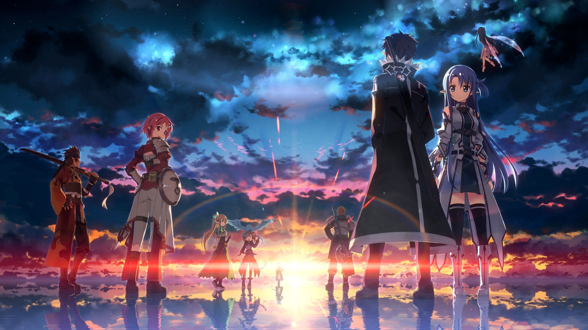
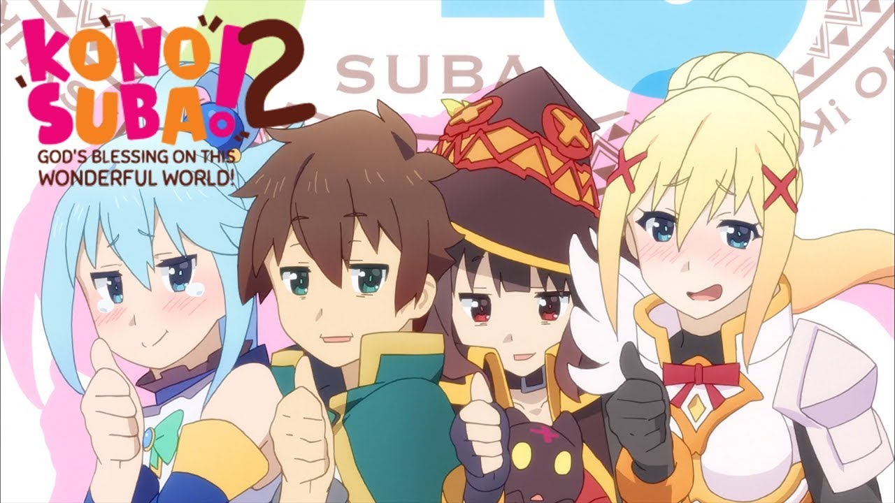
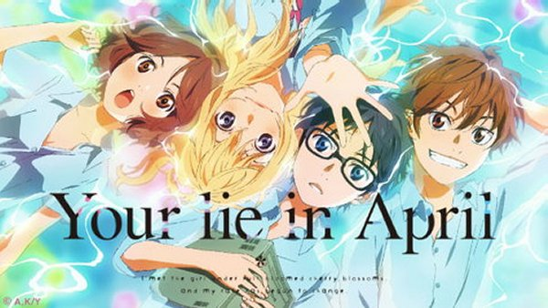
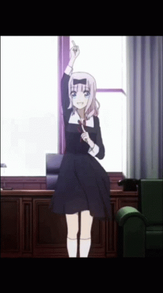

Wil je anime kijken, maar weet je niet met wat je moet beginnen? Hier staan lijstjes om je te helpen met welke je kunt beginnen, welke genre ze zitten en welke je nog meer zou kunnen kijken. Op welk nummer ze staan, is vooral naar mijn mening. Neem de volgorde van de anime dus niet altijd serieus.
Top 5 Adventure/Action Anime
- My Hero Academia
- Attack On Titan
- Sword Art Online
- Demon Slayer
- Dragon Ball Z
Top 5 Comedy Anime
- KonoSuba: God's Blessing on this Wonderful World!
- Food Wars
- The Disastrous Life of Saiki K.
- One Punch Man
- Mob Psycho
Top 5 Romance/Rom-com Anime
- My Youth Romantic Comedy Is Wrong, As I Expected
- Your Lie in April
- Your Name
- Weathering With You
- Nisekoi
Nog een paar andere aanraders, (omdat ze niet in de top 5 konden)
- Fire Force
- Dr. Stone
- Haikyuu
- Jujutsu Kaisen
- Kaguya-sama: Love is War
- JoJo's Bizarre Adventure
- Re:Zero - Starting Life in Another World
- Rascal Does Not Dream of Bunny Girl Senpai
- Domestic Girlfriend
- Blend S
- Black Clover
- Naruto
- One Piece
Waarschuwing!!! One Piece heeft meer dan 900 afleveringen. Het verhaal is leuk, maar het is makkelijk om af te haken door de vele afleveringen. Het is je eigen risico om er naar te kijken